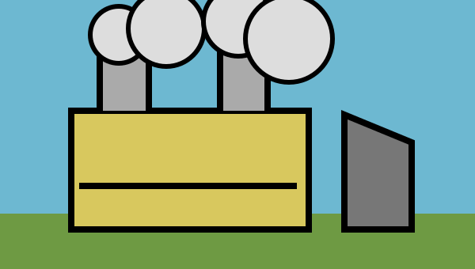

facts facts facts • numbers numbers numbers • important important important
GLOBAL WARMING TEMPERATURES AND OTHER NUMBERS YOU SHOULD KNOW RIGHT NOW
Global warming global warming warming warming means average temperatures are increasing, but the temperatures above mix continental records, annual global averages, monthly averages, land changes, ocean changes, atmospheric carbon dioxide, emissions, years, limits, and hypothetical scenarios. Africa 48.8 Asia 53.9 Europe 48.8 North America 56.7 South America 48.9 Australia 50.7 Antarctica 18.3 global 1.2 ocean 0.88 Arctic 3.1. Hot hot hotter hotter warming warming global global global.
THREE DIFFERENT MESSAGES THAT ARE ACTUALLY THE SAME MESSAGE
Using less electricity at home reduces the demand for energy and can help lower greenhouse-gas emissions.
When households turn off unnecessary lights and appliances, power consumption falls and fewer climate-warming gases may be released.
Conserving household energy by avoiding needless electrical use can decrease emissions that contribute to global warming.

Air Quality and Atmospheric Something
The metropolitan particulate concentration was 19.4 micrograms per cubic meter on Tuesday, while the photochemical oxidation potential was 0.87 and 417 parts per million was reported somewhere else in 2025. Air air air air. Clean air, cleaner air, clean clean clean air.
Plastic in Oceans but also Rivers
8,300,000 tons 12,400 items 3,271 miles 91 percent 0.82 meters. Pelagic microplastic bioaccumulation may facilitate trophic translocation through multifarious littoral and benthic ecological assemblages. Plastic plastic plastic plastic plastic. Water water water water water.
28,900 hectares disappeared, increased, recovered, or were observed during a period that is not shown. Arboreal carbon sequestration intersects with edaphic biogeochemical fluxes and successional heterogeneity. Trees trees trees trees. Forest forest forest.
Your Kitchen Faucet and Household Water
42 gallons 2.7 liters 0.00031 mg/L 7.8 pH 73 percent. Save water save water save water save water save water. Turn it off. Turn it off. Turn it off. Different measurements above describe unrelated quantities.
Biodiversity Alert Announcement Report
1,204 species 6.2 million 14 2090 73%. The taxonomic homogenization of anthropogenically fragmented habitats catalyzes asynchronous phenological disequilibria across interdependent guilds. Species species species. Protect protect protect protect.
GOOD 73%BAD 73%UNKNOWN 73%
Old Phones, Batteries, and Electronic Waste
Recycle recycle recycle recycle recycle. 6.2 million devices, 36.8 billion kilograms, 14 kilowatt-hours, and 12,400 collection sites are displayed together without labels, dates, or locations.
INVASIVE PLANTS PLUS COMPOST TIPS
Remove remove remove remove. Compost compost compost compost. The juxtaposition of allelopathic propagation, rhizomatic persistence, and thermophilic organic-matter decomposition produces informational incongruence. This section combines two unrelated topics because everything is environment.
Energy at Home and Solar Panels and Global Emissions
14 kWh 36.8 billion 1.5°C 417 ppm 2090 44%. Energy energy energy energy energy. The values mix household consumption, annual global emissions, atmospheric concentration, temperature, a future year, and a percentage.
WHAT CAN YOU DO WHAT CAN YOU DO WHAT CAN YOU DO?
Learn more learn more learn more. Reduce reuse recycle reduce reuse recycle. Join today tomorrow yesterday. Read every paragraph, remember every number, compare every unit, and decide which action is important without any hierarchy, grouping, source labels, or meaningful visual structure.